LINE Pay、悠遊付、全支付在 11/17–11/21 能拿多少回饋、每個地方該用哪一個，以及樂天超市和便利商店要買什麼。資料整理於 2026/11/14，回饋都有名額，額滿就停，付款前先打開 App 看活動頁。
| 地方 | 國泰 CUBE Visa＋國泰帳戶 | 中信 LINE Pay 卡 |
|---|---|---|
| 便利商店 | LINE Pay 綁 CUBE，15% → 用完上限改悠遊付 | LINE Pay 綁中信卡，25% → 用完上限改悠遊付 |
| 樂天超市 | LINE Pay 綁 CUBE，約 10% | LINE Pay 綁中信卡，約 15% |
| 傳統市場、小店 | 有 ZeroPay 貼紙就用全支付綁國泰帳戶 8.5% | 全支付綁帳戶 3.5% |
| 大創、Ediya、樂天免稅店 | 悠遊付（TWQR）12% | 悠遊付（TWQR）12% |
| 其他餐廳 | CUBE 切「趣旅行」刷卡約 3% | 中信 LINE Pay 卡刷卡 2.8%（登錄再 +2.2%） |
刷信用卡要付 1.5% 海外手續費，回饋要扣掉這筆；悠遊付、全支付綁帳戶付款免手續費。
在店家看到 ZeroPay 或 HIVEX 標誌才能用，多半是小吃店、傳統市場攤位、炸雞店。東門市場、偶來市場很多攤位有。
在韓國不能綁信用卡，只能用悠遊付錢包或綁銀行帳戶扣款。出發前綁好國泰帳戶，或先儲值。可用：CU、GS25、7-Eleven、emart24、大創、Ediya、樂天免稅店。
| 項目 | 便利商店（吃喝補給） | 樂天超市（旅遊購物） |
|---|---|---|
| LINE Pay 付款 | 5%（每月上限 100 點） | — |
| 綁 Visa 卡 | 10%（每月上限 200 點） | 3%（每月上限 150 點） |
| 綁中信卡加碼 | 10%（每月上限 144 點） | 5%（每月上限 110 點） |
| 觀光公社 × LINE Pay | — | 7%（綁 Visa，到 12/11） |
| 合計 | 25% | 約 15% |
中信加碼是每月限量、發完為止；台新的加碼 11/15 就結束，用不到。
LINE Pay 活動清單裡有 CU、7-Eleven、emart24，GS25 不在清單內；在 GS25 直接用悠遊付，四大超商都能用。
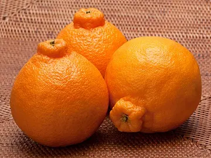
橘子／漢拏峰巧克力감귤 초콜릿濟州最經典的伴手禮，大包裝比機場便宜圖為漢拏峰（濟州橘子）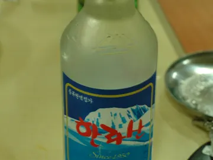
漢拏山燒酒한라산 소주濟州在地燒酒；要託運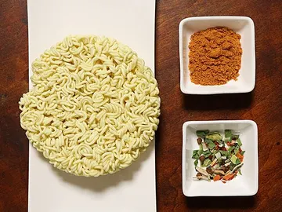
泡麵신라면 · 짜파게티 · 안성탕면 · 불닭볶음면5 包一袋買，比超商便宜很多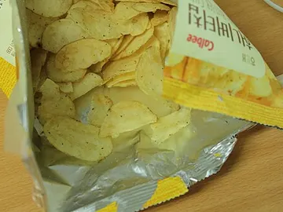
蜂蜜奶油洋芋片허니버터칩韓國超紅的甜鹹洋芋片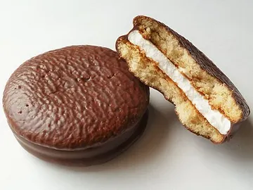
好麗友派초코파이韓國原版，常有濟州橘子等限定口味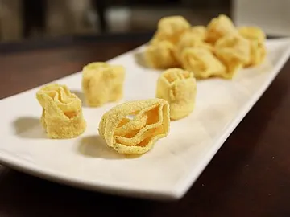
烏龜餅乾꼬북칩四層酥脆，口味常換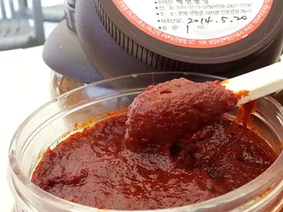
韓式辣醬、大醬고추장 · 된장買小盒就好；要託運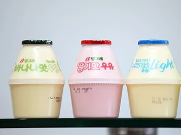
香蕉牛奶바나나맛우유必喝，也有草莓、哈密瓜口味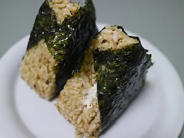
三角飯糰、飯捲삼각김밥 · 김밥早上趕路、還車前的早餐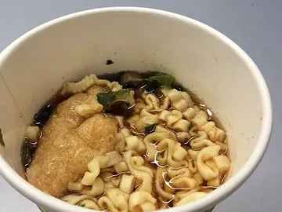
杯麵＋熱水컵라면店裡就能泡，很多店有自助煮泡麵機；加魚肉香腸、溏心蛋更像韓劇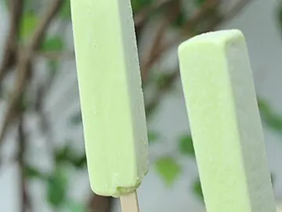
哈密瓜冰棒메로나韓國國民冰棒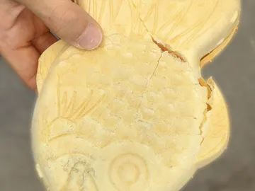
鯛魚燒冰淇淋붕어싸만코餅皮夾紅豆和香草冰淇淋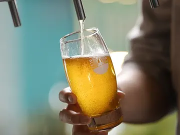
濟州啤酒제주맥주 · 제주위트에일 · 맥BTI濟州在地精釀，回飯店喝；GS25 有印 MBTI 字母的罐裝「맥BTI」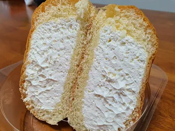
延世牛奶生乳包연세우유 생크림빵CU 招牌，鮮奶油爆漿；常有草莓、抹茶等限定口味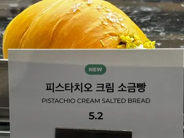
鮮奶油鹽麵包생크림 소금빵鹹鹹的鹽可頌夾鮮奶油，配咖啡圖為麵包店的開心果款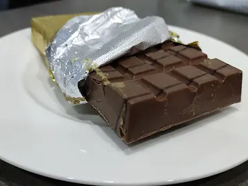
杜拜巧克力두바이 초콜릿開心果內餡加脆麵絲，韓國超商版還有麻糬口味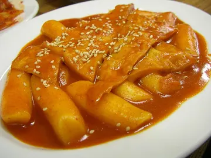
辣炒年糕떡볶이冷藏櫃的微波辣炒年糕，熱一下就能吃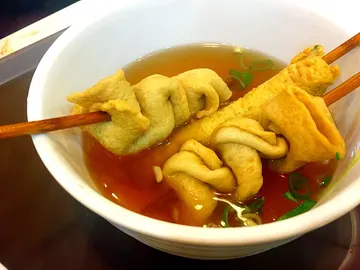
熟食、微波食品어묵 · 닭발 · 족발魚板串、辣雞爪、豬腳肉、便當，GS25 種類最多圖為魚板串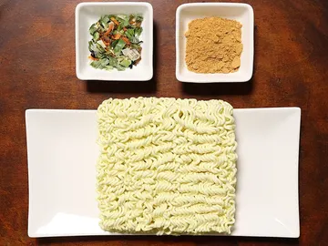
真拉麵調味粉오뚜기 진라면 스프單賣的泡麵湯粉，煮湯、炒菜都能加；分原味和辣味圖為真拉麵和湯粉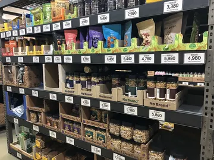
No Brand 零食노브랜드emart24 的自有品牌，洋芋片、餅乾便宜又大包圖為 No Brand 門市貨架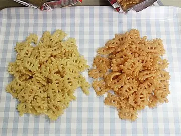
螃蟹餅乾꽃게랑比洋芋片更脆，原味、辣炒碼麵口味都推，很下酒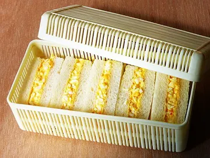
水果、蛋沙拉三明治과일 · 에그샐러드 샌드위치整顆水果夾鮮奶油，口味跟季節換；蛋沙拉款當早餐圖為蛋沙拉三明治示意各店貨架和特價不一樣，以現場為準。
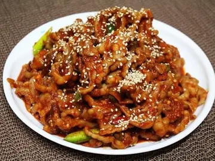
7-Eleven無骨辣雞爪무뼈불닭발微波就能吃，有年糕和炭火香；剩的醬汁拌飯糰圖為辣炒雞爪示意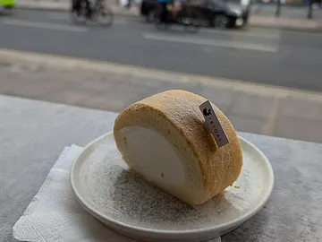
CU蛋糕捲롤케이크CU 甜點代表，原味、提拉米蘇是長青款圖為蛋糕捲示意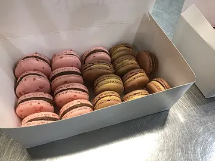
CU有嚼勁的馬卡龍쫀득한 마카롱一盒三種口味，出過濟州綠茶款圖為馬卡龍示意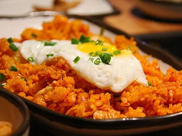
CU海苔鐵板炒飯철판볶음밥微波或倒進平底鍋炒，有蔥油、排骨、醃蘿蔔口味圖為炒飯示意這區來自 KKday 文章，內容是 2024 年取材，限定和聯名商品可能已經下架，以現場為準。
商品圖片來自 Wikimedia Commons，實際包裝可能不同。